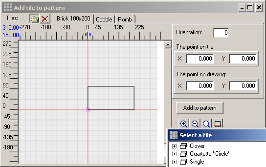
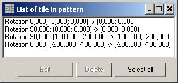

The pattern is needed to show the program how tiles should be paved. To set a pattern you will have to draw its fragment. The program will put the fragment on the draft, and then multiply this fragment when paving the plot. The points, where to put neighboring fragments are set when you create the pattern.
In order to start, create a new pattern or open the existing one using the Pattern menu or and

Lay the tiles on the draft the way they should be on the pattern. To lay each tile you should:
| 1. | Set the point where it will be put;
|
| 2. | Open the Add tile to pattern window;
|
| 3. | Set the point on the tile that will hit the point set on the pattern on the first step;
|
| 4. | Set the tile orientation relative to axes;
|
| 5. | Press the Add to pattern button.
|
Here is a detailed description of the process:
Mark tile's place button

If this point identifies the first tile of the pattern it will also be the reference point of the pattern and will be marked with the purple cross.
Add tile button

Left click to select points both on the pattern draft and on the tile. These points are displayed as blue crosses. You can modify coordinates in the tile window. Note that you can close and open this window whenever you need since all data is automatically saved every time you modify it. For more details, please see Adding tiles to a pattern.
After the tile is added to the pattern, the
A more simple way to add the tile is to use the button. If you press it, the program will add the tile using the point on the tile and the orientation previously specified in the Add tile to pattern window (this window won't open if using this button). If the point on the tile has not been specified yet, then the tile's reference point will be used for this purpose.
To modify the position of the tiles on the pattern or simply delete any or all of them, press the

Detailed description of this option you can find in the Editing graphic objects article. To edit the position of the tile, press Edit and modify the values in the pop-up window:
After the pattern is done, set the reference points of the neighboring patterns, so that the program could pave the plot. To set the points, press the

This is an example how one of possible patterns from rectangle tiles looks like in the final result:

Here you can view the basic fragments of the pattern. The reference point is in the centre of the coordinate grid. Red crosses mark the points where the neighboring patterns will be put. Note that the reference point of the neighboring pattern superimposes on the red cross. You do not have to mark all the points where the neighboring patterns will be put, just mark two points and the program will inverse them to have all required points.
|
Warning. This version of the program cannot take into account spacings between tiles. There are two ways to bypass this problem:
The first, and the simplest, though not proper way is to draw tiles of a slightly bigger size. In this case patterns are obvious and easy to create. Further on, when the algorithm will be improved and the program will be able to take into account spacings between tiles, you will have to redraw all tiles you have manually created. The second way is to create patterns with spacings between tiles. As a rule, on the stage of developing the project , a small scale is used and the gaps will be invisible. The only inconvenience is that during the pattern check, program will constantly warn you about voids found. |
After you are done, save the pattern.
You can also open an existing pattern to edit it. Go to Patterns > Open or press
If you tick the Preview checkbox, you will preview the pattern you select:

With the help of the Pattern filter checkbox you will be able to preview all available patterns for each tile: select the tile in the left section; view the patterns available in the middle section; preview the pattern in right section of the window:
You can delete the pattern opened in the editor: go to Pattern > Delete:
You can check the pattern you have created to validate there are no voids that can pervert the result. For more details, please see Validating patterns.